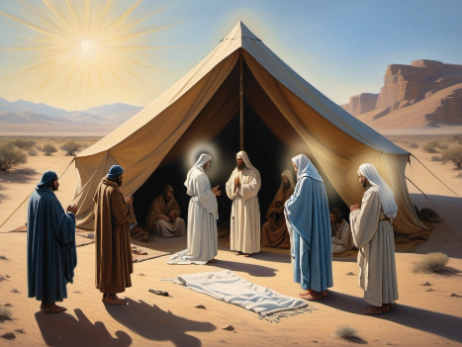

explicit manifestation of one’s loyalty to God. Again, it served as a symbol of holiness of God’s people. Moreover, it was a visible sign of the existence of the covenant with God. Circumcision was also an act of demonstrating one’s obedience to God. In addition, the performance of circumcision practices made God to fulfill His promises to Abraham. We can also analogous Christian baptism with the spiritual circumcision.
Activity 4.4
Use library and internet sources, and read Genesis 17, and explain the importance of circumcision according to the Bible.
The Lord’s visit to Abraham
The Lord appeared to Abraham by the oak of Mamre as he sat at the door of his tent in the heat of the day. Abraham looked up and saw three men standing near him. He welcomed them to his house. Abraham hastened into the tent to Sarah and said, “Make ready quickly three measures of choice flour (fine meal), knead it, and make cakes.” He told his servants to prepare the best part of the calf. Then, he took cakes, curds, milk and calf and set it before them. As they were talking, one of the guests said, “I will surely return to you in due season and your wife Sarah shall have son. Figure 4.4 depicts the Lord's visit to Abraham.
